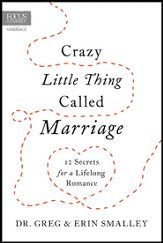
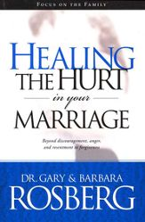
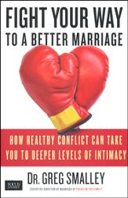
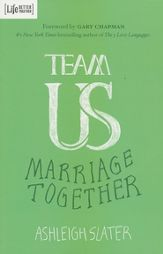

Your Results
Every marriage has both strengths and opportunities for growth. Research consistent with biblical wisdom indicates that a thriving marriage is the result of progress in several key areas of married life. Based on your responses to the previous questions, this report takes a look at these key areas in your marriage, identifying both your top strengths and opportunities for growth.
Your Areas of Strength
1. Commitment
View DetailsAttributes
Couples who go the distance believe that lifelong, thriving marriage is possible. They expect the journey to include hardships, but they are not afraid to press on together, taking life as it comes and living each day to the full. They trust God to provide their needs and to stand beside them come what may.
Insight
Recognizing that your marriage is a treasure and deciding that divorce is not an option. “Give honor to marriage, and remain faithful to one another in marriage.” Hebrews 13:4 (NLT).
Resources
FEATURED RESOURCE
Crazy Little Thing Called Marriage
Dr. Greg & Erin Smalley
Discover 12 biblically based strategies to help you work around roadblocks, foster successful communication, and build a lasting romance.
Buy NowFEATURED ARTICLE
Commitment Is The Foundation For A Deeply Connected Marriage
Scott Stanley
Choosing to invest in your marriage helps to strengthen the lifelong commitment that is foundational to your relationship.
Read More2. Cherishing
View DetailsAttributes
Thriving couples intentionally treasure and honor one another, and they do it by keeping a conscious account of the thing they value about their relationship. This is most effectively achieved by preserving precious memories and celebrating significant marital milestones.
Insight
Created by God, your spouse is of infinite worth and value. Reflect often on the things that you love and cherish about your spouse. “For where your treasure is, there your heart will be also.” (Matthew 6:21, ESV)
Resources
FEATURED RESOURCE
Fun Loving You
Ted Cunningham
This refreshing book will help you laugh together again, have fun, and remember why your spouse is the most likeable person you know.
Buy NowFEATURED ARTICLE
I Cherish You
Greg Smalley
The act of cherishing (to hold or treat as dear) is integral to family harmony and marital stability.
Read More3. Spiritual
View DetailsAttributes
Thriving couples place their spiritual commitments at the very center of their marriage. They have a deep, shared faith, and they consciously regard Christ as the foundation of their relationship. This common spiritual commitment is a predictor of marital success and longevity.
Insight
Couples who have a deep, shared faith and have Christ at the center of their marriage have more satisfying relationships and deeper intimacy. “Together, we are his house…and the cornerstone is Christ Jesus himself.” (Ephesians 2:20, NLT)
Resources
FEATURED RESOURCE
Sacred Marriage
Gary Thomas
For husbands and wives seeking to be holy, Sacred Marriage offers insights from Scripture, church history, and time-tested wisdom.
Buy NowFEATURED ARTICLE
Studying the Bible as a Married Couple series
Gary Thomas
Choosing to invest in your marriage helps to strengthen the lifelong commitment that is foundational to your relationship.
Read MoreYour Growth Opportunities
1. Coping
View DetailsAttributes
Successful couple realize that challenges are inevitable and prepare for the difficulties of life in a fallen world. They are not too proud to ask for help in times of trouble. They turn to the Lord in prayer in every circumstance and aren’t afraid to admit their needs and accept help when appropriate.
Insight
You will face challenges on your lifelong journey together. Always fight for your marriage and trust that God will turn your pain into blessings. “In this world you will have trouble. But take heart! I have overcome the world.” (John 16:33, NIV)
Resources
FEATURED RESOURCE
Healing the Hurt in Your Marriage
Dr. Gary & Barbara Rosberg
Examine conflict and a practical step-by-step process for resolving it in a healthy manner.
Buy NowFEATURED ARTICLE
Growing Stronger Through Stress in Marriage series
Erin Smalley
Change and stress are a part of life. You can face trials together, growing stronger through the challenges that come your way.
Read More2. Conflict
View DetailsAttributes
Strong couples recognize that spousal conflict is inevitable and use conflict to grow. They find healthy ways to handle conflict. They approach problems as a team, with each partner striving to understand how the other processes conflict. They are quick to express grace and forgiveness.
Insight
Conflict is an inevitable part of marriage. When it’s handled well, healthy conflict is an opportunity for deeper intimacy and connection. “When troubles come your way, consider it an opportunity…” (James 1:2, NIV)
Resources
FEATURED RESOURCE
Fight Your Way to a Better Marriage
Dr. Greg Smalley
Healthy conflict can facilitate communication, trust and respect if we manage our differences and disagreements in nourishing ways.
Buy NowFEATURED ARTICLE
How Fighting Can Help Your Marriage
Dr. Greg Smalley
Healthy conflict can facilitate communication, trust and respect if we manage our differences and disagreements in nourishing ways.
Read More3. Community
View DetailsAttributes
Thriving couples realize that they need other people and that other people need them. They understand that isolation is a threat to any marriage. They make it a point to engage with nurturing communities of all kinds, including active involvement in a local church
Insight
It takes a village to sustain a marriage. It’s vital to regularly connect with like-minded couples that are committed to your relationship. “And let us consider how we may spur one another on toward love and good deeds, not giving up meeting together, as some are in the habit of doing, but encouraging one another—and all the more as you see the Day approaching.” (Hebrews 10:24-25, NIV)
Resources
FEATURED RESOURCE
Team Us
Ashleigh Slater
This book challenges husbands and wives to see the potential when marriage is viewed as a safe refuge in which we can grow together.
Buy NowFEATURED ARTICLE
Community-Minded
Greg Smalley
Isolation is a threat to marriage. Connect regularly with other like-minded couples and participate in nurturing communities of all kinds.
Read More